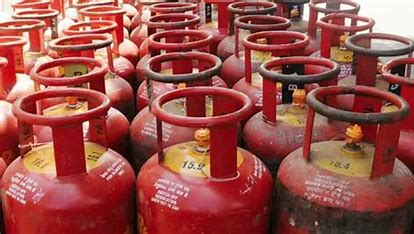
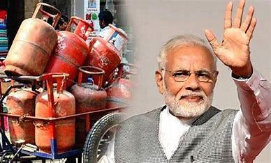
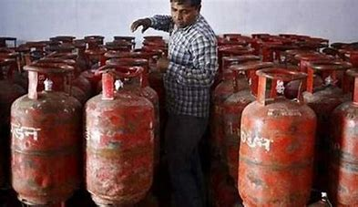

PM MODI'S GIFT



New Delhi: The Central government led by Prime Minister Narendra Modi on Wednesday announced to increase the subsidy for Pradhan Mantri Ujjwala Yojana (PMUY) beneficiaries from to Rs 300.
"The government has raised subsidy amount for Pradhan Mantri Ujjwala Yojana beneficiaries from Rs 200 to Rs 300 per LPG cylinder," Union minister Anurag Thakur during a briefing on Cabinet decisions said.
The Union Cabinet had in August this year approved a subsidy of Rs 200 per domestic LPG cylinder and had also also upped the existing subsidy for Ujjwala scheme beneficiaries by Rs 200.
PMUY has been widely praised as a successful social welfare scheme which has majorly contributed to increase in LPG penetration in the country from 62% in 2016 to near saturation now.
The total financial implication will be Rs.1650 crore for per connection at following rates
14.2 kg Single Bottle Connection – Rs.2200 per connection
5 kg Double Bottle Connection – Rs.2200 per connection
5 kg Single Bottle Connection – Rs.1300 per connection